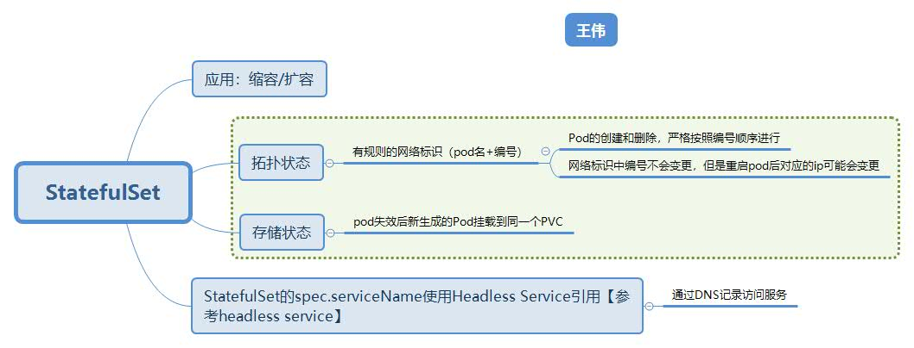

源码分析 #
1. StatefulSet资源定义 #
1.1 StatefulSet定义 #
staging/src/k8s.io/api/apps/v1beta2/types.go
type StatefulSet struct {
metal.TypeMeta
metal.ObjectMeta
Spec StatefulSetspec #1
Status StatefulSetStatus #2
}
1.2 StatefulSetspec定义 #
#1
staging/src/k8s.io/api/apps/v1beta2/types.go
type StatefulSetspec struct {
/// Pod副本数控制
Replicas *int32
/// Pod创建或者删除
Selector *metav1.LabelSelector
Template v1.PodTemplateSpec
VolumeClaimTemplates []v1.PersistentVolumeClaim # 存储状态【2】
ServiceName string
PodManagementPolicy PodManagementPolicyType # 2.2节
/// Pod升级和回滚
UpdateStrategy StatefulSetUpdateStrategy # 2.4节
RevisionHistoryLimit *int32
}
1.3 StatefulSetStatus定义 #
#2
staging/src/k8s.io/api/apps/v1beta2/types.go
type StatefulSetStatus struct {
ObservedGeneration *int64
Replicas int32 # 所有属于该 StatefulSet的Pod数量
ReadyReplicas int32 # 所有属于该 Statefulset的Pod且状态为ready的数量
CurrentReplicas int32 # 所有属于该 StatefulSet当前版本的Pod数量(升级完成时会等于UpdatedReplicas)
UpdatedReplicas int32 # 所有属于该 StatefulSet升级版本的Pod数量
CurrentRevision string # Statefulset当前版本的 set.Name+hash
UpdateRevision string # Stateful|Set升级版本的 set.Name+hash
CollisionCount *int32
Conditions []StatefulSetCondition
}
1.4 StatefulSet例子 #
apiVersion: v1
kind: Service
metadata:
name: nginx
labels:
app: nginx
spec:
ports:
- port: 80
name: web
clusterIP: None
selector:
app: nginx
---
apiVersion: apps/v1
kind: StatefulSet
metadata:
name: web
spec: ## 对应StatefulSetspec
serviceName: "nginx"
replicas: 2
selector:
matchLabels:
app: nginx
template:
metadata:
labels:
app: nginx
spec:
containers:
- name: nginx
image: k8s.gcr.io/nginx-slim:0.8
ports:
- containerPort: 80
name: web
volumeMounts:
- name: www
mountPath: /usr/share/nginx/html
volumeClaimTemplates: ## 存储状态
- metadata:
name: www
spec:
accessModes: [ "ReadWriteOnce" ]
resources:
requests:
storage: 1Gi
2. StatefulSet Controller详细说明 #
前提: 应用的各实例启动需要遵循一定的顺序， 顺序需要唯一的标识和编号.
2.1 Pod固定身份标识（编号） -> 拓扑状态【1】 #
- 名称维度
# pkg/controller/statefulset/stateful_set_utils.go
// getPodName gets the name of set's child Pod with an ordinal index of ordinal
func getPodName(set *apps.StatefulSet, ordinal int) string {
return fmt.Sprintf("%s-%d", set.Name, ordinal)
}
索引号 ordinal={0~ StatefulSetSpec.Replicas - 1}
- 网络地址维度
headless service对应pod的网络地址(完整域名)为: <hostname>.<subdomain>.<ns>.svc.cluster.local
# pkg/controller/statefulset/stateful_set_utils.go
func initIdentity(set *apps.StatefulSet, pod *v1.Pod) {
updateIdentity(set, pod)
// Set these immutable fields only on initial Pod creation, not updates.
pod.Spec.Hostname = pod.Name
pod.Spec.Subdomain = set.Spec.ServiceName
}
从名称维度可知，podName是固定的，所以pod的网络地址也是固定的。
- 存储维度 -> 存储状态
Pod的各个 volume是通过PVC来管理的，所以只要 Volume对应的PVC能保持不变，那就可以保证存储不变。那么顺其自然一定会想到，只要PVC的名称也和Pod的索引位置绑定，那问题就解决了。
# pkg/controller/statefulset/stateful_set_utils.go
// getPersistentVolumeClaimName gets the name of PersistentVolumeClaim for a Pod with an ordinal index of ordinal. claim
// must be a PersistentVolumeClaim from set's VolumeClaims template.
func getPersistentVolumeClaimName(set *apps.StatefulSet, claim *v1.PersistentVolumeClaim, ordinal int) string {
// NOTE: This name format is used by the heuristics for zone spreading in ChooseZoneForVolume
return fmt.Sprintf("%s-%s-%d", claim.Name, set.Name, ordinal)
}
pod的名字和pvc的名字一一对应。
总结: 可以看到3个维度的固定，本质都是依赖Pod的索引位置(ordinal)来固定的。
2.2 StatefulSet Pod创建和删除 #
根据StatefulSetSpec.PodManagementPolicy的设置，Pod创建分为OrderedReady和 Parallel两种模式。
OrderedReady模式: 按索引号0 ~ replicas-1的顺序，前序Pod创建成功后，才会接下来创建下一个Pod。
Parallel模式:并发创建各个Pod。
而对于Pod删除，用户直接删除StatefulSet的Pod是无效的，因为 StatefulSet马上就会重建。 如果要删除Pod,必须通过调整 StatefulSet的 Spec.Replicas来达到删除目的。即为Pod扩缩容处理。
2.3 Pod扩缩容 #
扩容处理: Replicas增大的情况，则直接是Pod创建的逻辑。 缩容处理: 因为需要减少Pod，为了不和Pod创建过程冲突，缩容是从最大索引号开始删除Pod。
# pkg/controller/statefulset/stateful_set_control.go
if ord := getOrdinal(pods[i]); 0 <= ord && ord < replicaCount {
replicas[ord] = pods[i]
} else if ord >= replicaCount {
//pod索引号大于最新的Spec.Replicas,说明Replicas减小了，这些Pod需要被缩容掉
condemned = append(condemned, pods[i])
}
// 从最大索引号开始缩容
for target := len(condemned) - 1; target >= 0; target-- {
// 如果该Pod正在被删除,则等待被删除完成即可
if isTerminating(condemned[target]) {
if monotonic {
return &status, nil
}
continue
}
// 如果被删除pod的前序pod中有不健康的,那么需要等待前序pod恢复为正常状态后才能继续缩容
if !isRunningAndReady(condemned[target]) && monotonic && condemned[target] != firstUnhealthyPod {
return &status, nil
}
// 到这里可以执行pod缩容删除了
if err := ssc.podControl.DeleteStatefulPod(set, condemned[target]); err != nil {
return &status, err
}
// 更新StatefulSet.Status
if getPodRevision(condemned[target]) == currentRevision.Name {
status.CurrentReplicas--
} else if getPodRevision(condemned[target]) == updateRevision.Name {
status.UpdatedReplicas--
}
if monotonic {
return &status, nil
}
}
2.4 Pod的升级 #
Pod升级策略由Spec.Update.Strategy字段指定，目前支持OnDelete和RollingUpdate两种模式。
2.4.1 OnDelete 模式 #
Spec.UpdateStrategy.Type=OnDelete: Spec.Template更新后，需要用户手动删除旧Pod，然后StatefulSet Controller会利用新的Spec.Template创建新Pod。代码中处理如下:
if set.Spec.UpdateStrategy.Type == apps.OnDeleteStatefulSetStrategyType {
return &status, nil
}
当升级策略为OnDelete时，执行直接返回，等待用户手动删除pod。
2.4.2 RollingUpdate 模式 #
Spec.UpdateStrategy.Type=RollingUpdate: Spec.Template更新后，StatefulSet Controller会从最大索引号开始逐个升级Pod。即先删除pod，然后等到删除的pod被创建好后再进行下一个索引号的Pod升级。
RollingUpdate模式的Pod升级，可以只升级部分Pod。新旧Pod分水岭的索引号由Spec.UpdateStrategy.RollingUpdate.Partition指定。其中[0 ~ partition-1]索引号的Pod为旧版本，而[partition ~ replicas-1]索引号的Pod为新版本。当然如果 partition > Spec.Replicas，则不会升级任何Pod。
RollingUpdate模式的代码如下(下面主要为删除旧Pod)
updateMin := 0
if set.Spec.UpdateStrategy.RollingUpdate != nil {
updateMin = int(*set.Spec.UpdateStrategy.RollingUpdate.Partition)
}
// 从最大索引号开始执行Pod升级处理(此处为旧Pod删除)
for target := len(replicas) - 1; target >= updateMin; target-- {
// 如果pod为旧版本并且不在被删除状态，则执行Pod删除
if getPodRevision(replicas[target]) != updateRevision.Name && !isTerminating(replicas[target]) {
err := ssc.podControl.DeleteStatefulPod(set, replicas[target])
status.CurrentReplicas--
return &status, err // 直接退出,等待被删除Pod被创建
}
// 等待到被删除pod创建且ready，才进行下一个pod的升级。否则就退出for循环
if !isHealthy(replicas[target]) {
return &status, nil
}
}
3. Statefulset的控制流程 #
经过上面代码级别的细节说明，下面大致梳理一下 StatefulSet Controller的控制流程。具体如下:
- 获取 StatefulSet: 由key从
set.Lister(本地缓存)中获取到需要处理的 StatefulSet实例 - 获取 Statefulset所有Pod: 由
StatefulSet.Spec.Selector从 pod.Lister(本地缓存)中过滤所有符合条件的Pod(且podName和 set.Name匹配) （1.2节） - 获取当前版本和升级版本的 Controller Revision: 如果升级版本的 Controller Revision不存在，就新创建一个。(StatefulSet创建时，当前版本和升级版本相同。当前升级完成后,他们也相同)
- 从
0 ~ Spec.Replicas-1逐个索引，创建StatefulSet Pod。 (2.2节) - 所有pod创建完成后，进入扩缩容逻辑处理(如果需要扩缩容操作的话) （2.3节）
- 扩缩容操作完成后，进入Pod升级逻辑(如果需要Pod升级操作的话) （2.4节）
- 更新 StatefulSet的 Status （1.3节）